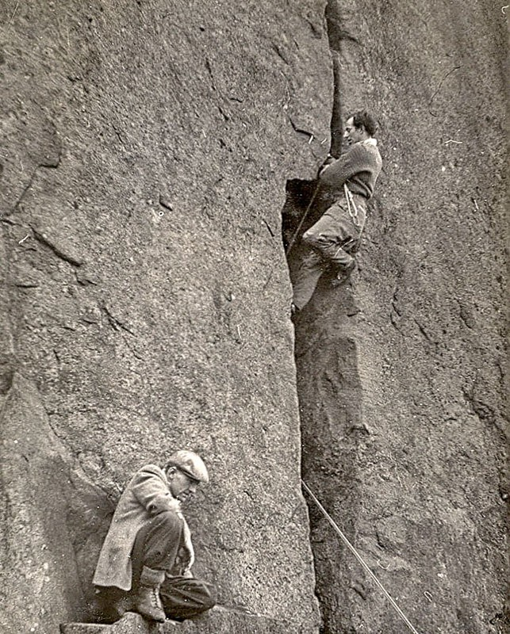
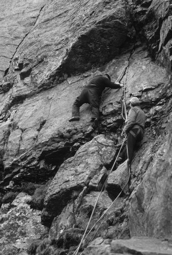
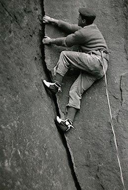

A selection of Whillans'
most famous routes;
Climbing in the 1950's was much more difficult without the modern gear we use today. Pebbles, nuts and slings were used to protect routes, nailed boots were the footwear of choice before being superseded by mechanical cams and technical rubber shoes.
Elder Crack E2 5b
Curbar Edge, Derbyshire
The imposing narrowing fissure is one of gritstone's great crack ticks. A brambly, blocky crack leads to the sentry-box. Runners can be placed deep in the crack (although not when wearing a helmet). The wide upper crack is a little easier - just keep laybacking. Brilliant!
Great Slab VS 4c
Clogwyn du r Arrdu, Snowdon
Another of the great Cloggy mountaineering routes, with only one technically demanding section up an often-damp corner. Other than that most of the climbing is straightforward.
Sentinel Crack E3 5c
The Roaches, Peak District
An awesome roof-crack; a desperate struggle for most. Climb an awkward groove to a poor rest and then undercut out left. The struggle to finger-jam past the lip is memorable and will leave its mark one way or another.
